|
DM3: The Abandoned Base
by Jjonez
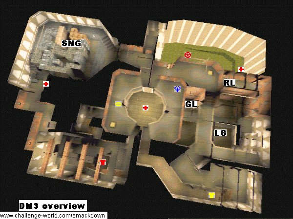
Introduction
If there is one level that could be considered the grand-daddy of all teamplay maps, it should be DM3. Together with DM2 it was already present in the first public test release of Quake. Offering great strategic possibilities and an incredible amount of tricks to master, it has been popular since.
Primarily used for deathmatch teamgames, other maps used for the same purpose -even in different games- have been compared to it.
Items available
Weapons:
- 1 rocket launcher

- 1 lightning gun

- 1 grenade launcher

- 1 super nailgun

- 1 super shotgun
- 1 nailgun
Armor:
- 1 red armor

- 1 yellow armor

Powerups:
- 1 Quad

- 1 Pentagram of protection

- 1 Ring of invisibility

- 3 Megahealths

Important areas
DM3 is really split in 2 parts where the main connection between them is in one central atrium. One side of the map contains the Quad, the three strongest weapons and the Yellow armor; the other contains only the two nailguns, the Red armor and a Megahealth.
It is possible to get from the strong part to the weak part by another way, but this is not often used as it involves a few slow (and noisy) platforms. The Pentagram and one Megahealth are in this area however. The remaining Megahealth sits right in the middle of the level while the Ring is also placed centrally, right across the Quad.
Rocket launcher - Bridges area
|
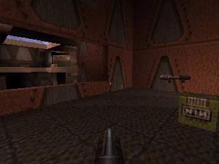
|
This area contains the Rocket Launcher in a small room with a window overlooking a water body. The Lightning gun is in the water right across the window while the Grenade launcher can be found a short swim away.
A submerged tunnel leads to the outside area with the Pentagram. From the Rocket launcher, stairs and bridges connect to the Yellow armor area and to a window over the Pentagram.
|
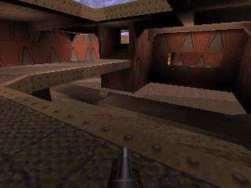
|
Yellow armor area
|
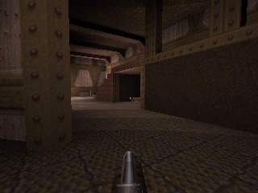
|
The Yellow armor is tucked away in a dark corner close to the Super shotgun.
From this area a walkway leads to the Quad, and the other exit goes back to the bridges. Right behind the armor is a teleport that exits to the window over the Pentagram.
|
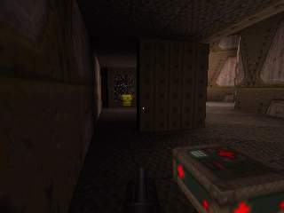
|
Central Quad & Ring area
|
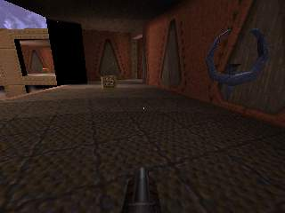
|
The circular central hub of the map is home to probably the most important item, the Quad. It sits on the balcony at the side of the Rocket launcher and Yellow armor areas. On the opposite balcony, the Ring makes its appearance once in a while, every 5 minutes to be precise. In between them, on the lower level sits a Megahealth.
To summarize connectivity: all ways lead here. The Yellow armor, Rocket launcher, Red armor, and Super nailgun are all located at about the same distance. Four high and two low roads even provide alternative routes to all.
|
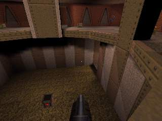
|
Red armor area
|
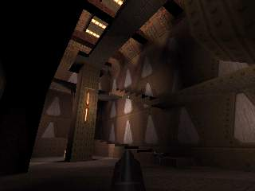
|
The Red armor is in a room of its own high on a winding stairway.
Rather small exits lead to the Quad area, both the low and the high level and to the warehouse.
|
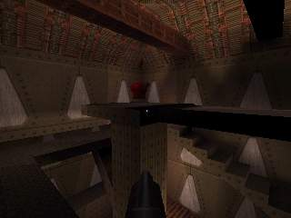
|
Warehouse
|
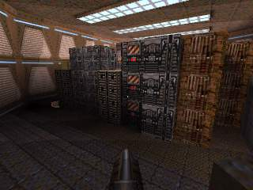
|
The warehouse is characterised by the presence of the Super nailgun and -obiously- plenty of ammunition boxes. A megahealth is a few jumps away behind a corner.
From here to the Quad is but a short walk. Gettin to the Red armor requires navigating some tight corridors. In these there is a teleporter, which puts you near the Ring in the central area.
|
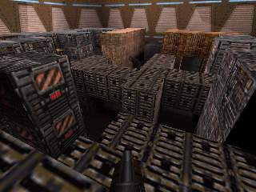
|
Pentagram outside area
|
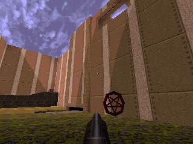
|
The imminent apparition of the Pentagram often leads to battles involving more then halve of the players in this huge outside area. A nearby Megahealth can aleviate some of the pain.
Getting to the Pentagram is no problem; just drop down from the window overlooking the whole area. Getting out of the area is different issue alltogether. It takes either a long swim through the tunnel to the Rocket launcher area or a slow ride on a few elevators to the Warehouse. Or take the shortcut ...
|
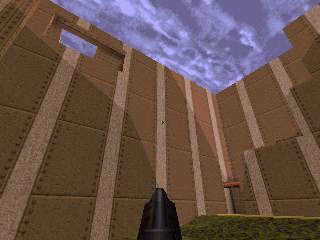
|
Popular shortcuts
Over the years DM3 has evolved from a huge map into an environment that can be navigated amazingly quick. Rocketjumps and other tricks to get around fast are essential for survival here.
To name just a few: jumps across the central area, from the Quad side to the Ring side; several jumps in the Red armor area to cut the time to reach in half; rocket jumps from the outside areas back to the high window; jumps from the bridge to the Rocket launcher.
The top players perform many, many more.
Basic strategies
The main strategy is simple: keep weapons, armors and Quad away from the enemy. The execution has changed quite a bit over the years however. Whereas people tended to just stay near the Rocket launcher in the early days, teams now tend to focus a lot of attention on the Red armor. The Ring and especially the Pentagram that appear every five minutes can send a real shockwave through the game with more often then not over half of the players ending up in tiny bits.
Tours
From the Rocket launcher to the Quad
From the Quad to the Pentagram and back to the centre through the water
From the central Megahealth, past the Warehouse to the Red armor
|